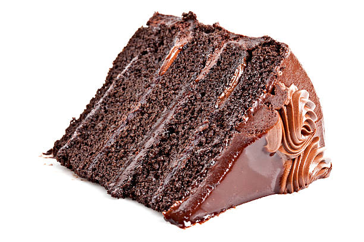

Chocolate Cake

Description
Directly robbed and plagiarized from here
Nutrional Facts: Per Serving: 367 calories; protein 3g; carbohydrates 55.4g; fat 15.8g; cholesterol 45.2mg; sodium 146.4mg.
Ingredients
- 2 cups all-purpose flour
- 2 cups white sugar
- 1/2 cup milk
- 1 tbsp. distilled white vinegar
- 2 eggs
- 1 tsp. baking soda
- 1 tsp. vanilla extract
- 6 tbsp. butter
- 4 tbsp. milk
- 3 tbsp. unsweetened cocoa powder
- 3 cups sifted confectioners' sugar
- 1 tsp vanilla extract
Steps
- Bring to a boil the 1/2 cup butter or margarine, 1/2 cup shortening, water and 1/4 cup cocoa. Remove from heat and add flour, sugar,
1/2 cup milk and vinegar. Mix well. Then add: eggs, baking soda and 1 teaspoon vanilla.
- Mix well until lumps are gone. Pour into greased 9 x 13 inch pan. Bake at 400 degrees F (205 degrees C) for 20 minutes or until toothpick comes out clean.
- To Make Fudge Frosting: Combine in saucepan , 6 tablespoon butter or oleo, 4 tablespoons milk and cocoa. Bring to rolling boil. Remove from heat and add
3 cups confectioners' sugar and 1 teaspoon vanilla. Beat until smooth. Spread on cooled cake.